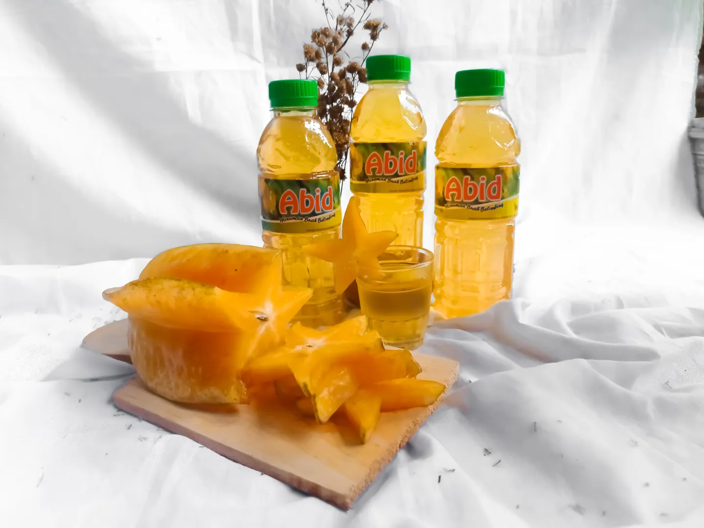
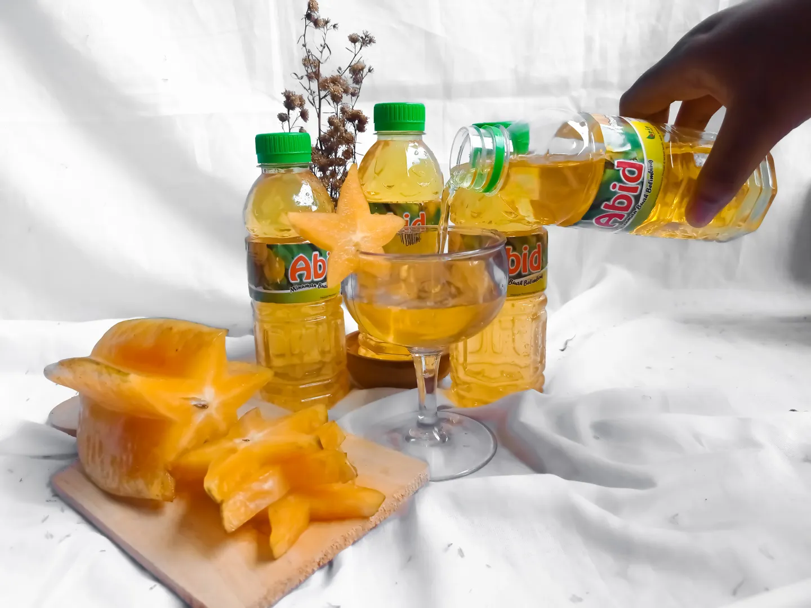
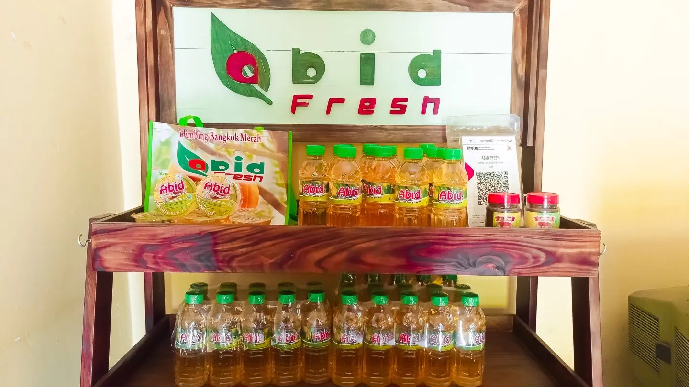
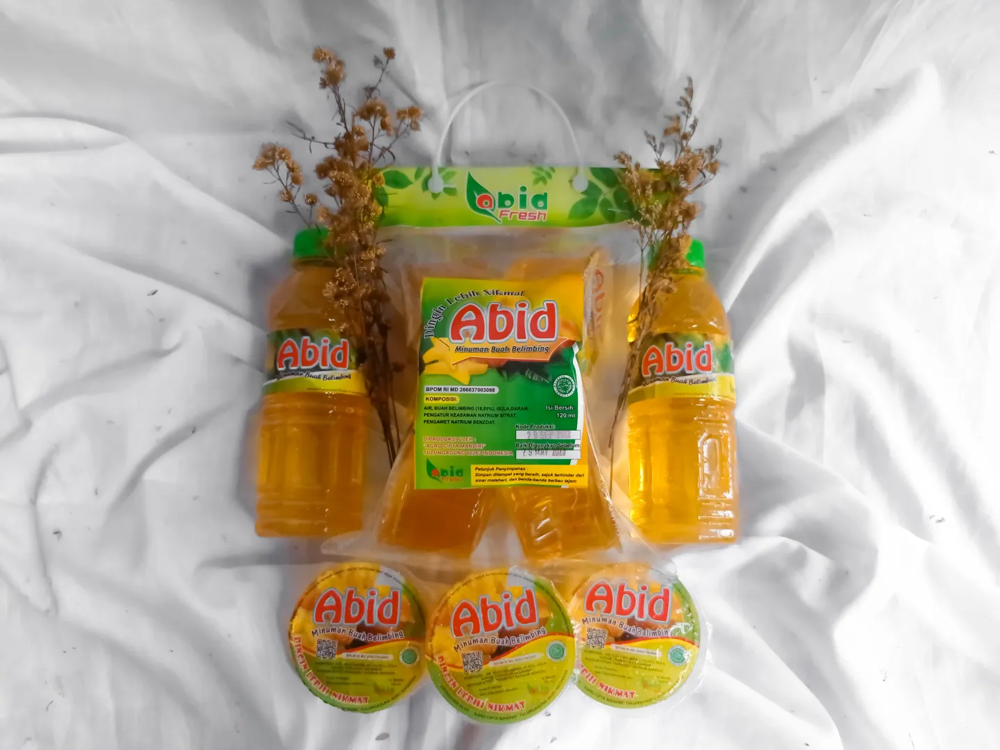
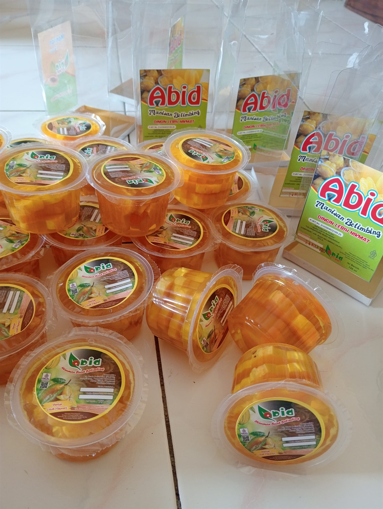
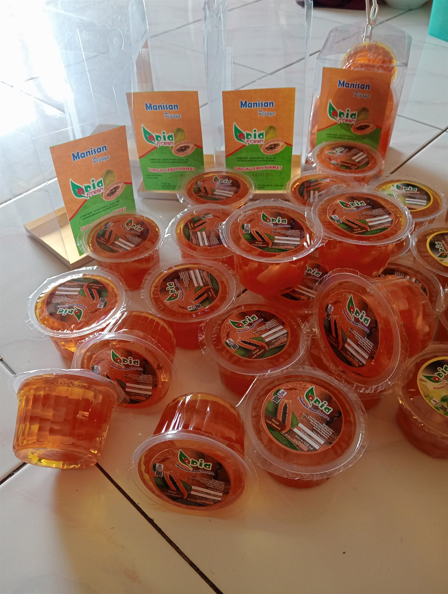

Buah Khas Tulungagung
Menggunakan buah belimbing segar pilihan (termasuk Belimbing Bangkok Merah) dengan cita rasa manis-segar autentik.
Sari buah belimbing adalah olahan buah belimbing khas Tulungagung dari Abid Fresh “Agro Cipta Mandiri” yang paling banyak diminati masyarakat. Diproses higienis, terdaftar resmi di BPOM RI, dan tersertifikasi Halal melalui Lembaga Pemeriksa Halal (LPH).



Abid Fresh merupakan Usaha Mikro Kecil Menengah (UMKM) di bawah naungan Kelompok Agro Cipta Mandiri yang dikelola oleh Ibu Puji Astutik di Desa Jarakan, Kecamatan Gondang, Kabupaten Tulungagung. Didirikan sejak tahun 2015, kami mengolah buah belimbing unggulan khas Tulungagung menjadi beragam produk olahan seperti Sari Buah Belimbing, Dodol, Manisan, dan Selai.
Saat ini, produk unggulan kami yang paling digemari masyarakat mencakup Minuman Sari Buah Belimbing (kemasan botol 330 ml serta dus cup isi 12 & 24), olahan terbaru Manisan Belimbing dan Manisan Pepaya kemasan mika jinjing isi 6 cup, serta Buah Belimbing Fresh langsung dari petani lokal.
Air, Buah Belimbing (18,89%), Gula, Garam, Pengatur Keasaman Natrium Sitrat, dan Pengawet Natrium Benzoat sesuai standar keamanan pangan BPOM.
Simpan di tempat yang bersih, sejuk, terhindar dari sinar matahari langsung dan benda-benda berbau tajam. Sajikan dingin untuk rasa paling nikmat.
Menggunakan buah belimbing segar pilihan (termasuk Belimbing Bangkok Merah) dengan cita rasa manis-segar autentik.
Terdaftar resmi di Badan Pengawas Obat dan Makanan (BPOM RI MD) untuk kemasan Cup 120 ml maupun Botol 330 ml.
Telah melalui proses pemeriksaan dan sertifikasi kehalalan resmi sehingga aman serta tenang dikonsumsi seluruh keluarga.
Tersedia untuk pembelian satuan, paket oleh-oleh, grosir kardus, serta menerima pembayaran tunai maupun QRIS Abid Fresh.
Nikmati kesegaran Minuman Sari Buah Belimbing serta varian baru Manisan Belimbing dan Manisan Pepaya kemasan jinjing — cocok untuk stok kulkas, acara, maupun oleh-oleh khas Tulungagung.
Kemasan botol plastik 330 ml yang pas digenggam dan praktis dibawa bepergian. Pelepas dahaga instan yang paling nikmat diminum dingin.

Favorit Keluarga • Isi 12Kemasan dus praktis berisi 12 cup minuman sari buah belimbing (120 ml/cup). Pas untuk stok kulkas harian keluarga maupun buah tangan khas Tulungagung.
Pilihan paling ekonomis dengan isi 24 cup (120 ml/cup) untuk suguhan tamu, acara keluarga, rapat, hajatan, stok kulkas, maupun mitra reseller.

Produk Baru • Isi 6 CupPotongan buah belimbing segar (34,4%) berpadu kuah manis-segar dalam 6 cup @ 120 ml (total 720 ml) dengan kemasan mika jinjing elegan. Dingin lebih nikmat!

Produk Baru • Isi 6 CupPotongan buah pepaya pilihan yang kenyal dan manis segar dalam 6 cup praktis @ 120 ml dengan kemasan kotak mika jinjing rapi. Nikmat disajikan dingin!
Selain minuman sari buah dan manisan, tersedia buah belimbing segar matang pohon langsung dari kebun serta informasi pemesanan olahan Dodol dan Selai Belimbing.
Pilih jumlah kemasan yang Anda inginkan, total harga akan terhitung otomatis dan siap dikirim ke WhatsApp resmi Abid Fresh.
Keamanan pangan dan kenyamanan konsumen adalah prioritas utama kami. Setiap botol dan cup Minuman Buah Belimbing ABID telah melalui proses pendaftaran izin edar pangan olahan di Badan Pengawas Obat dan Makanan (BPOM RI) serta sertifikasi halal melalui Lembaga Pemeriksa Halal (LPH).
Nama Jenis Pangan: Minuman Buah Belimbing • Nama Dagang: ABID
Nama Jenis Pangan: Minuman Buah Belimbing • Nama Dagang: ABID
Klik foto mana saja untuk melihat detail produk, kemasan, dan kesegaran asli Sari Buah Belimbing Abid Fresh lebih dekat.
Kenali lebih dekat proses pengolahan dan profil UMKM Abid Fresh di Tulungagung.
Siap melayani pembelian eceran, paket oleh-oleh khas Tulungagung, pesanan acara, hingga kemitraan reseller.